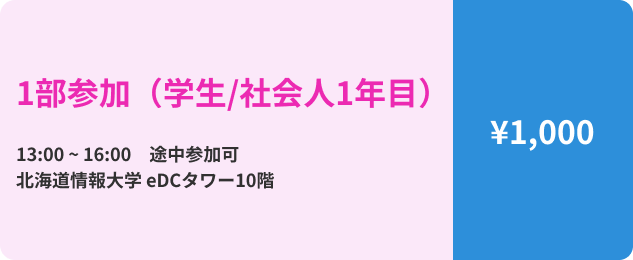
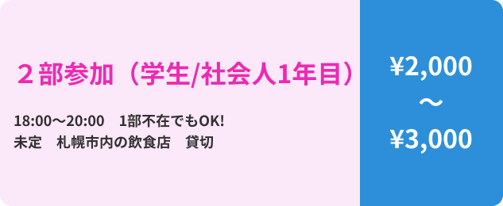
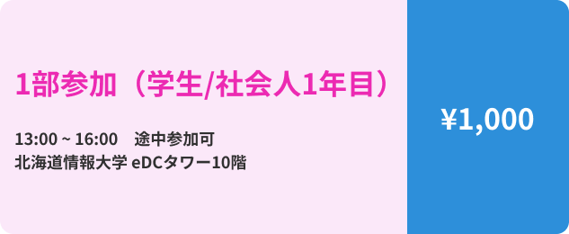
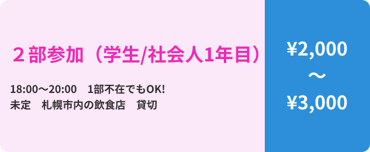

どうすか？人生は？
みんな、何歳になったのよ。おじさんは55歳よ。今の現役3年生は19期にもなりました。
コロナがあって、15周年やれなかったのですが、「+2」というかたちで今年やることにしました。
みんなに会いたいし。
でも、「+2」って他の意味もあって、2人の卒業生が情報大学に戻ってきて教員になったってこと。
3期の杉澤さんと6期の近澤くんなんだけど。これってすごいことだよね！
そんなありがたいこともありますが、久しぶりぶりにみんなの顔が見たいっていうのが一番の思いです。
みなさんの参加を心よりお待ちしております。
（今回は、お尻出しませんて！安心して）
安田光孝
2024/11/3(Sun)
集まれ、安田ゼミ
語りつくそう、15+2周年の思い出。
2022年の春、コロナ禍の真っ只中。
安田ゼミは15周年を迎えました。
今年は気がつけば18年目。
来年にはいよいよ20期生が入ってくるというこの年に、お祝いの席を設けることとなりました。
15周年の時に集まることが叶わなかったからこそ、このタイミングで17年間の思い出を一度振り返ってみませんか？
PRPGRAM
プログラム
15:00
第I部開始
15:02
実行部長のおはなし
15:05
安田先生のおはなし
15:10
安田先生の乾杯
15:30
企画①：参加者紹介
15:40
企画②：安田ゼミ10年の軌跡VTR
16:00
企画③：ヤスデミー賞
16:30
企画④：安田光孝の〇✕クイズ
18:00
記念撮影
18:15
第I部終了/第II部開始
20:00
第II部終了・撤収作業
21:00
撤収完了・各自解散
COST
参加費

 



ACCESS
アクセス・概要
場所： 北海道情報大学のeDCタワー10階
日付： 2024/11/3(Sun) ※翌日祝日です！
時間： 1部 13:00~16:00 学内 途中参加可
2部 18:00~20:00 札幌市内の飲食店
申し込みフォーム： https://x.gd/Nilri
備考： Zoom参加あります！
CONTACT